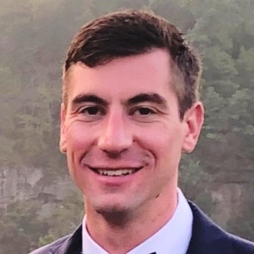
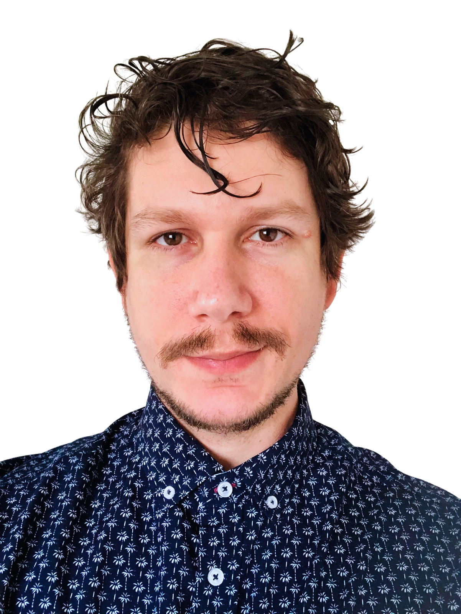

Blood is meant for circulation!
The vision of the Space Monkeys is to create a blood bank management application with the goal of safely providing as many patients as possible with clean, unexpired, compatible blood so that they have the best chance of a positive health outcome if they need a blood transfusion.

David Hughes
David got his initial degree in Chemical Engineering from Penn State University. He moved to Denver after graduating in 2015 and worked as a facilities engineer in the oil & gas industry for over 6 years, including a 3.5 year expat assignment in Israel. He moved back to the US and enrolled in the CSPB program in 2021, and currently lives in Silverthorne, CO. He will be graduating this semester and will start as a software engineer for Workiva in September.

Cyro de Lima
Cyro is a talented Web Developer from Brazil. He is currently a senior at CU Boulder, pursuing a degree in Computer Science. Having lived in the United States for the past 6 years, Cyro brings a diverse background to his work. His passion for web development and dedication to continuous learning make him a valuable asset in creating innovative solutions.

Michael Becker
A Data Scientist from the Midwest looking to improve his Software Engineering skills through the Applied Computer Science program.
Travis Byrne
Travis earned a BA in Astronomy from the University of Colorado Boulder and is currently seeking to expand his career horizons by participating in the Applied Computer Science Post-Baccalaureate program at the same university. When not working, he enjoys hiking, stargazing, and occasionally scuba diving. He is planning to graduate in December 2024.
Dylan Kayyem
Dylan earned a BA in Philosophy and Psychology from the University of Colorado at Boulder back in 2018 and has since gotten married, and currently works for Home Depot as a Measure Technician in beautiful Broomfield, Colorado. And is planning to work as a software engineer for Home Depot after he graduates the CS program.